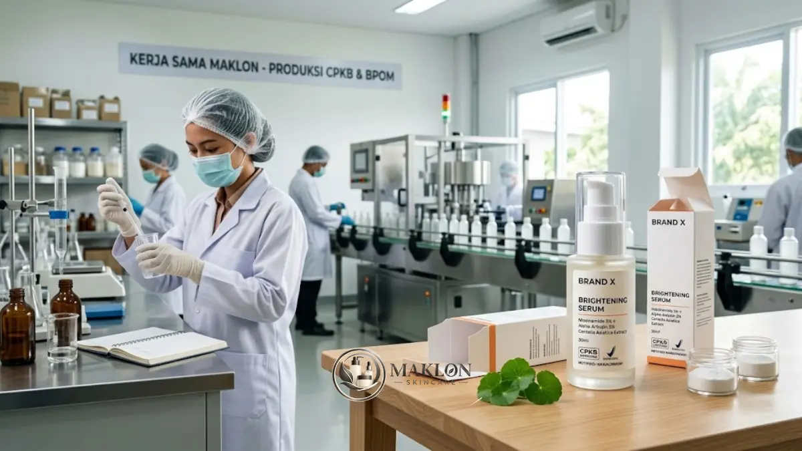

Brand skincare baru bisa tumbuh lebih terarah dengan memulai dari satu masalah konsumen, satu produk andalan (hero product), dan mitra maklon yang transparan soal formula, CPKB, dan notifikasi BPOM.
Studi kasus di bawah ini adalah skenario ilustratif yang disusun dari pola umum peluncuran brand skincare lokal. Nama "Brand X" dan detailnya tidak mewakili klien tertentu, dan tidak ada angka penjualan yang diklaim.
- Fokus pada satu masalah kulit nyata konsumen tropis: kulit kusam dan noda hitam.
- Formulasi seimbang: Niacinamide 5%, Alpha Arbutin 2%, dan penenang Centella asiatica.
- Mitra pabrik bersertifikat CPKB penuh untuk memastikan kelancaran notifikasi BPOM.
Membangun brand kosmetik dari nol memang memberikan tantangan tersendiri bagi para pendiri baru, tetapi pola keberhasilannya sangat bisa dipelajari secara sistematis.
Artikel ini menggambarkan bagaimana sebuah brand rintisan baru, sebut saja Brand X, memanfaatkan layanan terpadu pihak pabrik maklon skincare untuk meluncurkan produk serum pencerah wajah unggulan.
Dengan menerapkan fondasi bisnis yang disiplin, brand baru dapat bersaing sehat di pasar kecantikan digital yang kian dinamis.
Latar Belakang: Menjawab Keresahan Konsumen
Brand X memulai langkah bisnisnya dari riset mendalam terhadap keresahan konsumen di iklim tropis Indonesia: tampilan kulit kusam dan noda gelap bekas jerawat yang sulit pudar.
Riset pasar awal dilakukan lewat tiga metode sederhana yang sangat aplikatif:
- Membaca ulasan produk pencerah sejenis di marketplace untuk memetakan keluhan pengguna yang berulang.
- Melakukan survei singkat kepada puluhan calon pengguna di lingkaran target audiens.
- Memetakan klaim kompetitor untuk menemukan celah kebutuhan yang belum terjawab secara tuntas.
Dari hasil telaah data tersebut, Brand X memutuskan fokus merilis satu produk andalan (hero product) sebelum terburu-buru meluncurkan rangkaian paket lengkap.
Strategi satu hero product terbukti menekan kebutuhan modal awal, memudahkan kontrol perputaran stok, dan membuat pesan positioning brand jauh lebih tajam.
Eksekusi Melalui Jasa Maklon
Brand X memilih mitra pabrik yang memiliki sertifikat CPKB resmi, karena perusahaan penerima jasa maklon wajib memiliki sertifikat tersebut sesuai ketentuan regulasi kosmetik nasional.
Alih-alih menggunakan formula katalog umum, mereka meminta layanan riset formulasi custom dengan komposisi zat aktif yang terukur:
- Niacinamide sekitar 5%: untuk mencerahkan rona kulit kusam sekaligus memperkuat sawar pelindung kulit (skin barrier).
- Alpha Arbutin sekitar 2%: untuk menyamarkan bintik hitam dan bekas jerawat, berada pada batas atas konsentrasi yang dinilai aman oleh SCCS Eropa untuk sediaan wajah.
- Ekstrak penenang Centella asiatica: untuk menjaga kenyamanan kulit dan meminimalisir potensi iritasi pada fase pemakaian awal.
Kombinasi ini dipilih karena berada dalam rentang konsentrasi lazim yang seimbang antara efektivitas pencerahan dan kelembutan di kulit.
Sebelum diproduksi secara massal, formula sediaan diuji stabilitasnya pada suhu ekstrem serta melewati uji tempel (patch test) klinis, lalu didaftarkan secara resmi melalui notifikasi BPOM kosmetik.
Strategi Pemasaran Produk
Untuk menembus pasar yang ramai, Brand X menerapkan strategi pemasaran digital yang menitikberatkan pada transparansi dan edukasi berkelanjutan:
- Ulasan jujur dari nano-influencer: Brand mengirim sampel ke kreator konten berkomunitas kecil namun memiliki tingkat interaksi (engagement) tinggi, dengan syarat ulasan disampaikan apa adanya tanpa rekayasa.
- Konten before-after yang wajar: Menyajikan dokumentasi pemakaian rutin selama beberapa minggu dengan pencahayaan kamera konsisten, disertai disclaimer tegas bahwa respons kulit tiap individu berbeda.
- Optimasi halaman etalase marketplace: Deskripsi produk pada toko online membeberkan daftar bahan aktif, persentase konsentrasi, serta petunjuk cara pakai secara transparan demi membangun kredibilitas.
- Edukasi konten rutin: Menghadirkan artikel dan video pendek seputar cara kerja bahan aktif pencerah yang mampu menjawab keraguan calon konsumen sebelum membeli.
Alur Peluncuran Ilustratif dari Konsep sampai Penjualan
Urutan berikut menggambarkan tahapan umum produksi maklon serum dan essence dari fase ide hingga barang siap edar komersial:
- Riset dan penentuan konsep: Merumuskan masalah kulit utama yang diselesaikan, profil target pengguna, dan janji klaim yang realistis.
- Seleksi pabrik maklon: Membandingkan sertifikat CPKB pabrik mitra, portofolio formulasi sejenis, kuantitas MOQ, dan transparansi rincian biaya.
- Pengembangan formula dan sampel: Formulator pabrik meracik sampel prototipe sediaan, lalu diuji karakteristik sensorinya oleh tim brand.
- Uji stabilitas dan keamanan: Hasil evaluasi laboratorium menjadi acuan mutlak sebelum melangkah ke tahap produksi massal.
- Notifikasi BPOM dan desain label: Memastikan desain label kemasan memuat nomor notifikasi resmi, daftar INCI, dan bebas dari klaim berlebihan.
- Produksi massal dan evaluasi: Memantau tingkat penjualan, ulasan pelanggan, dan tingkat pembelian ulang (repeat order) sebelum memutuskan ekspansi lini produk baru.
Durasi pengerjaan setiap tahapan dapat bervariasi bergantung pada kapasitas antrean fasilitas pabrik maklon skincare OEM yang Anda tunjuk.
Mengapa Pendekatan Satu Produk Berjalan Baik?
Memulai bisnis kecantikan dengan satu hero product memberikan tiga keuntungan praktis yang sangat menentukan stabilitas arus kas brand:
Pertama, modal tidak terpecah ke banyak varian stok, sehingga persyaratan MOQ pabrik dapat dipenuhi tanpa membebani keuangan.
Kedua, semua amunisi materi promosi dan anggaran iklan dapat menyampaikan satu pesan yang konsisten, misalnya: "Serum pencerah lembut untuk kulit tropis berminyak".
Ketiga, seluruh umpan balik dan masukan konsumen terkonsentrasi pada satu produk tunggal, sehingga evaluasi penyempurnaan formula atau kemasan bisa dieksekusi cepat pada batch produksi berikutnya.
Pelajaran yang Bisa Anda Terapkan
Dari skenario keberhasilan ini, terdapat lima prinsip dasar yang dapat langsung Anda adopsi saat merintis brand sendiri:
- Awali dari keresahan masalah nyata konsumen, bukan sekadar ikut-ikutan tren bahan aktif viral.
- Fokuskan sumber daya pada 1 produk andalan (hero product) berkualitas prima terlebih dahulu.
- Pilih pabrik maklon yang transparan mengenai daftar bahan, sertifikasi CPKB, dan pendampingan izin BPOM.
- Bangun bukti sosial (social proof) lewat ulasan nyata konsumen yang jujur dan dapat diverifikasi.
- Hindari klaim bombastis yang melampaui hasil uji ilmiah, karena hasil pemakaian kosmetik sangat bervariasi pada setiap jenis kulit.
Kesalahan Umum yang Perlu Dihindari
Banyak pemilik brand pemula mengalami kegagalan karena terjebak pada beberapa kekeliruan fatal berikut:
- Menaikkan konsentrasi bahan aktif secara berlebihan demi klaim "paling ampuh" tanpa mempertimbangkan batas aman iritasi kulit.
- Menggunakan materi foto perubahan kulit (before-after) yang diedit secara berlebihan, yang justru mengikis kepercayaan konsumen.
- Memproduksi terlalu banyak jenis produk sekaligus sebelum produk pertama terbukti menghasilkan penjualan yang stabil.
- Mengabaikan prosedur legalitas notifikasi BPOM karena tergesa-gesa ingin segera berjualan di pasar online.
Rintis Hero Product Serum Brightening Brand Anda
Skenario Brand X memperlihatkan pola keberhasilan yang terbukti: berangkat dari masalah konsumen yang jelas, fokus pada satu hero product unggulan, serta bermitra bersama pabrik maklon berstandar CPKB resmi.
Pendekatan pemasaran yang transparan membangun loyalitas pelanggan yang jauh lebih kokoh dibanding klaim instan berlebihan. Mulailah dari langkah awal yang terukur bersama tim profesional kami.
Siap mewujudkan produk serum brightening impian Anda? Diskusikan rencana bisnis dan formulasi sampel Anda bersama konsultan kami melalui WhatsApp Konsultasi Maklon Skincare sekarang juga.